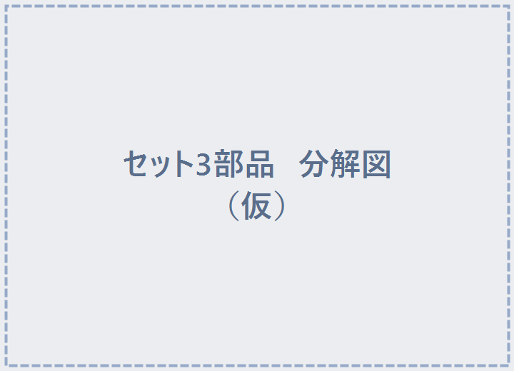

STEP 4 / 5
セットの中身とプロパティ
追従版セットを開くと、3つの部品が入っています。

| 部品 | 役割 | 触っていい？ |
|---|---|---|
| ピンズ本体 | 掴む・装着・追従する本体 | 位置を変えてOK（そこが初期位置になります） |
| ディスプレイ | 飾り台の置き場（最初から台紙入り） | 台紙・スタンドを入れ替えてOK |
| リセットボタン | 押すとピンバッジが初期位置に戻る | 見た目は差し替えOK（機能は残す） |
💡「ディスプレイ」には初期状態でこの商品の台紙が入っています。掴むとピンズ本体だけ外れ、台紙が展示位置に残ります。台紙・アクスタ・展示スタンドなど、お好みに入れ替えできます。
⚙ ピンズ本体のプロパティ詳細（調整したい人向け・基本は初期値のままでOK）
| 項目 | 初期値 | 説明 |
|---|---|---|
| manager | （自動） | 管理オブジェクトを指す欄。自分で触らなくてOK（Managerを置けば自動設定） |
| syncInterval | 0.1 | 掴んで動かす間、自分のピン位置を他プレイヤーへ送る間隔（秒）。小さいほど滑らか／通信量増 |
| glideTime | 0.12 | 装着・解除した瞬間にスッと寄るアニメの長さ（秒）。見た目の演出 |
| worldLerp | 12 | 手放して置いた時・他人が持つのを見る時に、同期位置へ追いつく速さ。大きいほどキビキビ |
| glideLerp | 14 | 装着直後のグライド中にボーンへ吸い付く速さ。大きいほど速くピタッと付く |